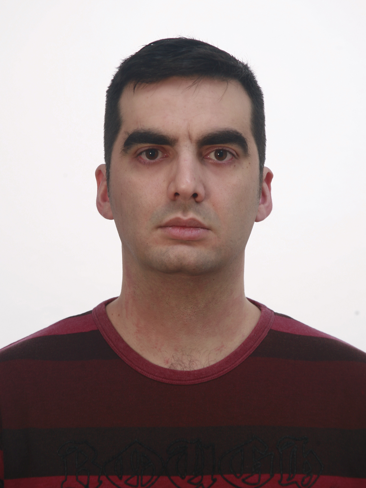

Mis proyectos
Mis aptitudes
Softskills
- Ordenado y responsable.
- Capaz de trabajar en equipo.
- Abierto a aprender.
- Comprometido.
- Adaptativo.
Hardskills
- Programación: Java, Python, JavaScript, PHP, HTML5, CSS3, C, C++.
- Bases de datos: MySQL y MongoDB
- Gestión de servidores: Apache, Tomcat, Nginx, Wordpress, PHPMyAdmin.
- Manejo de máquinas virtuales: VirtualBox, VMWare.
- Frameworks: Angular, Laravel
Idiomas
- Inglés avanzado, certificado B2.
- Castellano nativo.
Sobre Mí
Estudié Bachillerato de Ciencias de la Salud, y más tarde estudié FP Grado Superior en Desarrollo de Aplicaciones Web. En este momento me encuentro estudiando Ingeniería Informática, sin embargo estoy abierto al mercado laboral. Estoy interesado en los sectores del desarrollo web, el big data, la cíberseguridad, la IA y el Machine Learning.
Contacto


Teléfono: +34 628 14 68 41
Email: gf_alvaro@hotmail.com